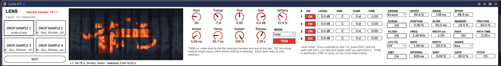
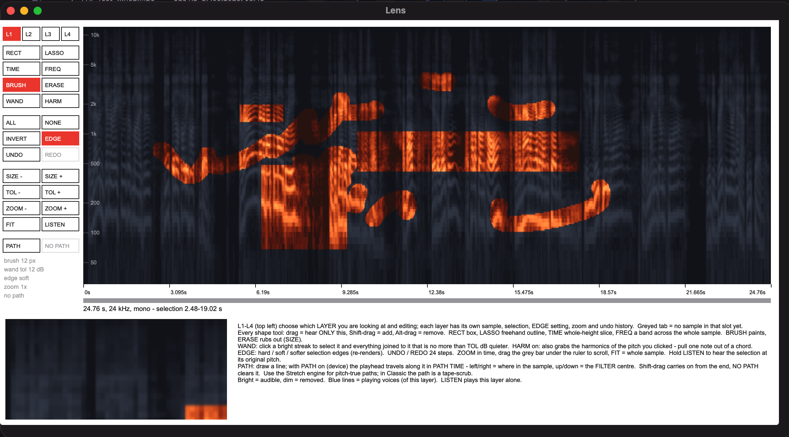

29
lens
Spectral-selection sampler after iZotope Iris — paint the part of a sample you want, in time and frequency, and play only that. Four layers.


about
Drop up to four samples. Each appears as a spectrogram in a pop-out editor, where you select regions of time and frequency; only what is selected is heard. The selection is rendered offline into a second buffer (an STFT with the unselected cells zeroed), so the 16-note engine just plays audio: no real-time FFT, edges as sharp as you like, cheap polyphony. One note plays every layer at once, so a sound can be the attack of one sample over the body of another. Two engines: Classic (pitch and speed tied, like any sampler) and Stretch (granular: the key sets pitch, SPEED sets time, 0 freezes). Borrowed from Dillon Bastan's Iota II: drawn playback paths, a band filter that follows the path's height, self-triggering Emit, and a drifting playhead.
- type
- instrument
- built by
- claude
- state
- v0.7.1 - working in live
- folder
- Lens Device
quick start
- 01Put
Lens.amxdon a MIDI track. Drop a WAV/AIFF on DROP SAMPLE 1. Play: C3 is the original pitch. - 02Press EDIT (or click the overview). Drag a box with RECT over something bright: it turns orange, the rest dims, and notes now play only that.
- 03Shift-drag adds, Alt-drag removes — for RECT, LASSO, TIME and FREQ alike. WAND with HARM on pulls one pitched note, with its harmonics, out of a texture.
- 04Drop another sample on slot 2, pick L2 in the editor, select something from it, and balance the two in the layer table.
- 05Set ENGINE to Stretch to make every key the same length; SPEED 0 freezes, SPRAY brings the freeze alive.
controls
main
- RootC-2 - G8
- The key that plays original pitch (C3).
- Transpose / Fine±24 st / ±50 ct
- Tuning of the whole instrument.
- Gain-36 - +12 dB
- Output level.
- Vel Sens0 - 100 %
- How much velocity affects level.
- Attack Decay Sustain Release
- Amplitude envelope, shared by a note's layers.
- ModeOne-shot / Loop / Ping-pong / Reverse
- What happens at the end of the selection (or of the path).
- Trimtoggle
- On: each layer starts at its own first selected moment and ends at its last. Off: the whole sample length plays, silent where nothing is selected.
layers
Four slots, each a sample plus a selection. The table on the device mixes them.
- ONtoggle
- Layer sounds or not. Takes effect from the next note.
- LEVEL / PAN-36 - +12 dB / ±50
- Mix. Pan is a balance control.
- TUNE / FINE±24 st / ±50 ct
- Detune a layer against the others.
engine
- ENGINEClassic / Stretch
- Classic: pitch and speed tied. Stretch: granular; the key sets pitch, SPEED sets time.
- SPEED-400 - 400 %
- Stretch only. 0 = frozen, negative = backwards.
- GRAIN10 - 500 ms
- Small = grainy, large = smooth but smeary; 60-120 is neutral.
- SPRAY0 - 500 ms
- Random scatter of where each grain reads.
- SCRUB / POSITION / GLIDE
- Scrub on: the playhead parks at Position (% of the selection), moving there at the Glide rate.
- WANDER / FRICTION0 - 100 %
- Stretch only. A tethered random drift of the read point; Friction high = jittery, low = long lazy swings.
filter and path
- FILTERtoggle
- A band-pass per note per layer.
- FREQ / WIDTH30 Hz - 18 kHz / 0.1 - 6 oct
- Centre and width. With a path, the path's height replaces FREQ.
- PATHtoggle
- Playheads follow the line drawn with the editor's PATH tool: left-right = where in the sample, up-down = filter centre.
- PATH TIME20 ms - 60 s
- One trip along the path.
lfo
One per note, restarting with the note.
- LFO TOOff / Pitch / Position / Filter / Level / Pan / Speed
- Target.
- RATE / DEPTH / SHAPE
- Depth 100 = ±1 octave, ±half the selection, ±4 octaves, full tremolo, hard left-right, 0-200 % speed.
emit
- EMITtoggle
- Lens plays itself, no MIDI needed.
- INTERVAL / VARY20 ms - 20 s / 0 - 100 %
- Time between notes and its scatter.
- GATE / PITCH1 - 400 % / note
- Note length as % of the interval; the note played.
editor
- L1 - L4tabs
- Which layer you see and edit. Greyed = empty slot.
- RECT LASSO TIME FREQtools
- Drag = only this, Shift = add, Alt = remove.
- BRUSH ERASESIZE -/+
- Paint and rub out.
- WANDTOL -/+, HARM
- Select a streak and what joins it; HARM adds its harmonics.
- ALL NONE INVERT
- Whole-layer actions.
- EDGEhard / soft / softer
- Feathers the selection edges in the render.
- UNDO REDO24 steps
- Selections only (not paths).
- ZOOM -/+ FIT
- Time zoom; drag the grey bar under the ruler to scroll.
- PATH / NO PATH
- Draw a playback path (Shift-drag extends it); clear it.
- LISTENhold
- This layer alone, original pitch.
push 3
encoders read left to right. slots marked “–” are intentionally empty.
Selecting is a mouse job by nature; Push covers the playing controls.
workflow
one note out of a chord
WAND with HARM on, click the lowest streak of the note you want. Raise TOL until the whole note lights up, lower it if neighbours join in. EDGE soft takes the 'cut-out' ring off.
hybrid sounds
Layer 1: TIME-select just the attack of a percussive sample. Layer 2: FREQ-select the sustained body of something pitched. Trim on, so both start together.
frozen pads
Stretch, SPEED 0, SPRAY 30-60 ms, WANDER 40 %. Or SCRUB on and automate POSITION.
iota-style gestures
Stretch, FILTER on, draw a PATH that wanders up and down through the bright parts, Mode = Ping-pong, PATH TIME a bar or two. EMIT on with some VARY makes it play itself.
gotchas
- Only the first 60 s of each sample is used.
- In the Classic engine a PATH is a tape-scrub: the key no longer sets the pitch. Use Stretch for pitched paths.
- WANDER and LFO -> Position only act in the Stretch engine.
- Frozen (SPEED 0), scrubbed and path-less looping notes last until the key is released; a one-shot note lasts as long as its longest layer.
- Layer ON applies from the next note, not to notes already held.
- Paths are not in the undo history.
- Stretch is granular, not a phase vocoder: it sounds like a good granular stretch, not a transparent studio one.
- After replacing the .amxd, delete the device from the track and drag it on again.
rebuilding
python3 build_lens.py in the device folder regenerates the engine (make_engine.py unrolls the per-layer gen~ code from one template — edit that, never lens_engine.genexpr), then Lens.maxpat and a frozen Lens.amxd with lens_ui.js embedded.
python3 sim_lens.py transpiles the shipped genexpr to Python (88 checks); node test_lens_node.js runs the shipped editor script under a mocked Max (8734 checks).
Architecture: live.drop -> two buffers per layer (pristine + rendered); the editor v8ui renders selections offline in ~18 ms Task slices; notes reach gen~ through a ring in a buffer written by peek~ (nothing lost inside a signal vector); paths travel in buffer~ ---lnpath; the face overview is a second v8ui fed a thumbnail through a buffer. Lessons: never bang a live.text (it toggles — use outputvalue); keep gen~ literals small.
how-to 1: first sound
- 01Drop a sample on DROP SAMPLE 1. The status line under the overview reads reading... analysing... and then the length, sample rate and what is selected. Until you edit, everything is selected and Lens is an ordinary sampler.
- 02Play C3: original pitch. Root moves that reference key; Transp and Fine tune the whole instrument on top.
- 03Mode: One-shot plays to the end of the selection even if you let go late; Loop and Ping-pong repeat while the key is held; Reverse plays once backwards. Release always goes through the Release time.
- 04Attack / Decay / Sustain / Release shape every note. For one-shots of percussive material leave Sustain at 100 %; for pads in Loop mode, lengthen Attack and Release.
- 05VelSens 0 % = every note full level; 100 % = level follows velocity completely. Gain is the output trim — turn it down when several layers stack up.
how-to 2: selecting
- 01Press EDIT. Time runs left to right, frequency bottom (30 Hz) to top on a log scale. Bright orange = selected = audible; dim blue-grey = removed. The read-out bottom right shows the time, frequency and note name under the mouse.
- 02Every shape tool obeys the same three gestures: drag = keep only this, Shift-drag = add this, Alt-drag = remove this. The commonest slip is forgetting Shift and losing the previous selection — UNDO brings it back.
- 03RECT a box; LASSO a freehand outline (it closes itself); TIME a full-height slice (pick a moment); FREQ a band across the whole sample (pick a register, e.g. everything under 200 Hz).
- 04BRUSH paints selection, ERASE rubs it out; SIZE -/+ sets the width (shown under the tools).
- 05WAND: click a bright streak. It takes that streak and all that is joined to it and no more than TOL dB quieter than the spot you clicked. Too little selected: TOL +. It spreads into the neighbours: TOL -, or click a brighter part. HARM on: click the lowest streak of a pitched note and its harmonics are taken too.
- 06ALL / NONE / INVERT act on the whole layer. A quick way to remove something: select it, then INVERT.
- 07EDGE cycles hard / soft / softer. The picture does not change; the sound is re-rendered with feathered edges. Hard edges can ring or sound 'cut out'; soft is usually the more natural.
- 08ZOOM +/- zooms in time about the middle of the view; drag the grey bar under the ruler to scroll; FIT shows everything. Zoom in before fine brush work — the grid really is finer, not just bigger.
- 09Hold LISTEN to hear this layer's selection alone at original pitch without touching the keyboard. While a red bar shows bottom right, the change is still being rendered.
- 10On the device, TRIM on makes a note start at the first selected moment (no silence before it) and end at the last. Turn it off if the timing inside the original sample matters.
how-to 3: layers
- 01Drop further samples on slots 2-4. In the editor the L1-L4 tabs choose which layer you see and edit; a greyed tab is an empty slot. The overview on the device follows the tab.
- 02Each layer has its own selection, EDGE setting, zoom, undo history and path. Nothing you do on L2 touches L1.
- 03One key plays every layer whose ON is lit. LEVEL and PAN mix them; TUNE (semitones) and FINE (cents) detune one against the others — +12 or +7 for a built-in interval, a few cents of FINE for width.
- 04ON takes effect from the next note; LEVEL, PAN, TUNE and FINE act at once, on held notes too.
- 05With TRIM on, each layer starts at its own first selected moment, so an attack taken from one sample and a body taken from another line up. In Loop mode each layer loops its own selection, so different lengths drift against each other.
- 06A one-shot note lasts as long as its longest layer.
how-to 4: stretch, freeze, scrub
- 01ENGINE = Classic: a normal sampler — higher keys are shorter. SPEED, GRAIN, SPRAY, SCRUB, POSITION, GLIDE, WANDER and FRICTION do nothing in Classic.
- 02ENGINE = Stretch: the key sets pitch only; SPEED sets how fast time passes. 100 % = original length on every key, 50 % = twice as long, 200 % = half, negative = backwards, 0 % = frozen on the spot.
- 03GRAIN is the size of the overlapping slices: 60-120 ms is neutral; below ~30 ms it turns grainy and pitched; above ~250 ms it smears and echoes. Long grains suit slow pads, short ones suit rhythmic material.
- 04SPRAY scatters where each grain reads. 0 = faithful; 20-60 ms removes the static buzz of a frozen or very slow sound; hundreds of ms = a cloud.
- 05SCRUB on: the playhead stops running and sits at POSITION (0-100 % of the selection), travelling there at the GLIDE time. Hold a note and move POSITION, automate it, or map it to a Push encoder. SCRUB overrides SPEED.
- 06Frozen (SPEED 0) and scrubbed notes never reach the end, so they last until you release the key — in every Mode.
- 07WANDER adds a slow random drift around the playhead (Stretch only); FRICTION high = small nervous movements, low = long lazy swings. Lovely on a frozen note.
how-to 5: paths and the filter
- 01FILTER on puts a band-pass on every note of every layer. FREQ is its centre, WIDTH its size in octaves (0.3 = a narrow whistle, 2-3 = gentle focus, 6 = nearly open). It works in both engines.
- 02In the editor choose PATH and draw a line across the spectrogram (green, with a dot at its start). Shift-drag carries on from the end; NO PATH clears it. Under the tools it says path drawn. Each layer has its own path.
- 03On the device switch PATH on and use ENGINE = Stretch. Hold a note: the playhead travels along your line, once per PATH TIME. Left-right on the line = where in the sample; it may double back, stand still (a vertical stroke) or jump.
- 04With FILTER also on, the line's height becomes the filter centre and FREQ is ignored — so drawing upwards opens the sound towards the top. Without FILTER the height does nothing.
- 05Mode decides the end of the trip: One-shot = the note ends; Loop = start again; Ping-pong = back along the line; Reverse = travelled from its end to its start.
- 06GLIDE also smooths path movement: 0 ms follows the line exactly, a few hundred ms rounds off jumps.
- 07In Classic a path is a tape-scrub: pitch comes from how fast the line moves through the sample and the key is ignored. Useful as an effect, wrong if you wanted tuned notes.
- 08A layer with no path drawn ignores the PATH switch and plays normally.
how-to 6: lfo, emit
- 01LFO TO picks one target; Off disables it. There is one LFO per note and it restarts with each note. RATE in Hz, DEPTH in %, SHAPE Sine / Triangle / Saw (falling) / Square / S&H (a new random value each cycle).
- 02Depth 100 % means: Pitch ±1 octave (2-5 % is vibrato); Position ±half the selection (Stretch only); Filter ±4 octaves around the centre (FILTER must be on); Level full tremolo; Pan hard left-right; Speed 0-200 % of SPEED (Stretch only) and of the path's travel.
- 03EMIT on: Lens plays PITCH by itself every INTERVAL ms — no MIDI clip needed, and it runs whether or not Live is playing. VARY scatters the timing (0 = metronomic). GATE is how long each note is held, as % of the interval: under 100 = gaps, over 100 = overlaps (up to 16 notes).
- 04Emitted notes use all the normal settings (Mode, envelope, engine, path, LFO). Keys you play sound alongside them. Remember to switch EMIT off — it is saved with the Set.
what needs what
if a control seems to do nothing
- SPEED GRAIN SPRAYneed
- ENGINE = Stretch.
- POSITION GLIDEneed
- ENGINE = Stretch and SCRUB on (GLIDE also smooths paths).
- WANDER FRICTIONneed
- ENGINE = Stretch, WANDER above 0.
- FREQ WIDTHneed
- FILTER on. FREQ is ignored while a path is active.
- PATH TIMEneeds
- PATH on, a path drawn on that layer, its sample loaded.
- Path heightneeds
- FILTER on.
- RATE DEPTH SHAPEneed
- LFO TO not Off. Position/Speed targets need Stretch; Filter target needs FILTER on.
- INTERVAL VARY GATE PITCHneed
- EMIT on.
- Layer LEVEL PAN TUNE FINEneed
- a sample in that slot and its ON lit.
- TOL / HARMaffect
- the WAND only. SIZE affects BRUSH and ERASE only.
- Releasenote
- is also what ends a frozen, scrubbed or looping note after key-up.